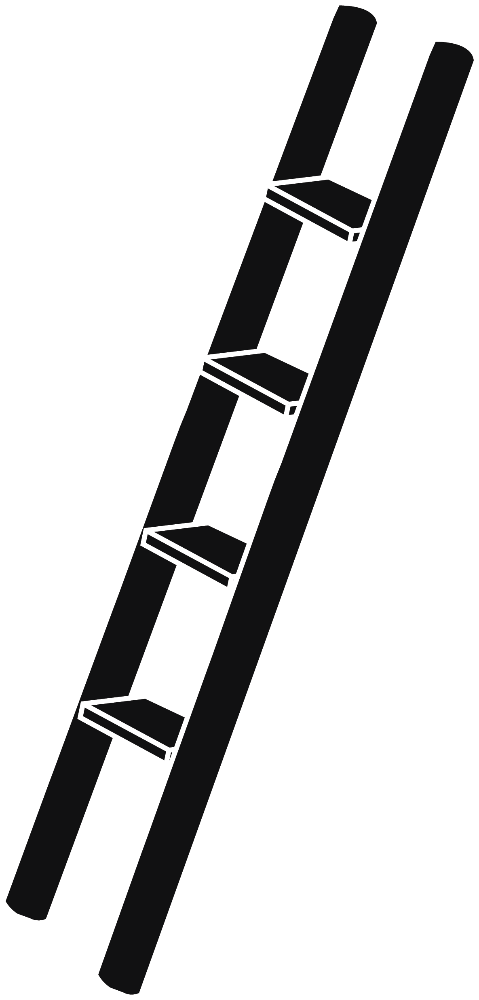
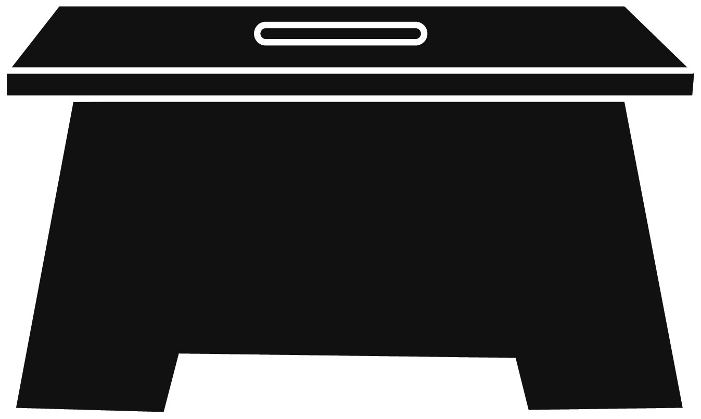
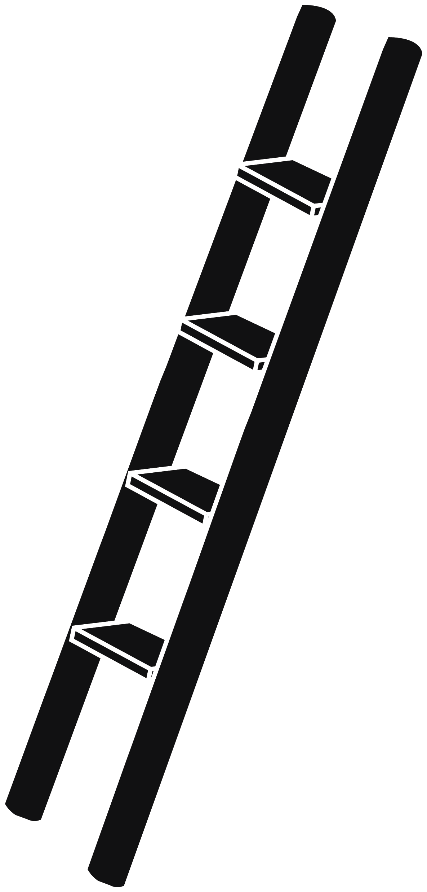
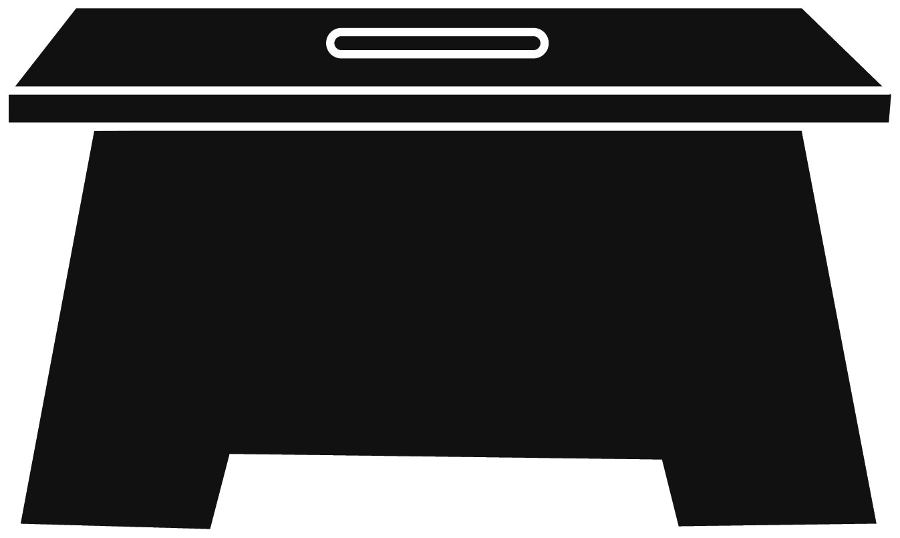
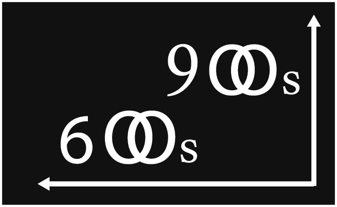
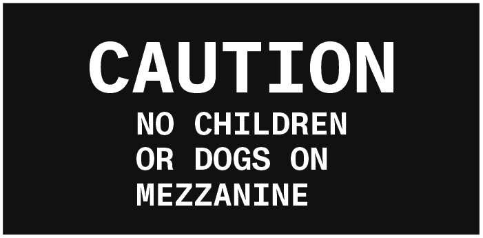
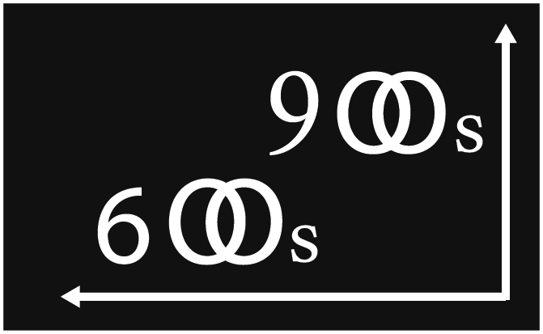
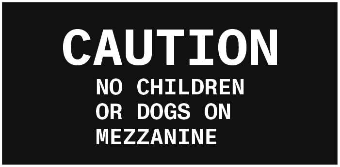
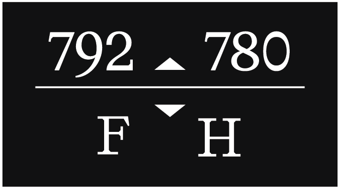
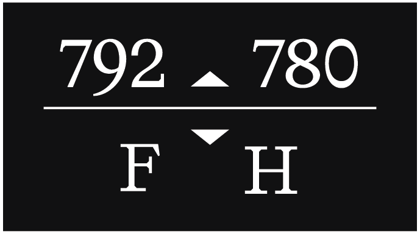

Intimacy in design isn't only about privacy, it's about how space makes people feel close, safe, and connected even in shared or public areas. Researchers in architecture and psychology have found that small-scale spaces, warm materials, and subtle boundaries help turn large or impersonal places into ones that feel personal. A study on Public Space Intimacy (Victoria University of Wellington, 2018) explains that details like lower ceilings, corners, and partitions let people feel "present but protected." In Tokyo's Jimbocho neighborhood, researchers noticed that narrow streets and tiny shops create a sense of comfort inside a dense city (Urban Design and Mental Health Journal, 2017). Other studies on Public Intimacy in architecture show that buildings can connect public life with private feeling, letting people project their own emotions and stories into a shared space. Together, these ideas show that intimacy in public space comes from design that lets people take small ownership, choosing a corner, a bench, or a path that feels like their own.

The Providence Athenæum shows how a public building can still feel deeply personal. Although it's open to everyone, its rooms are small and layered, filled with tall bookshelves, narrow aisles, and wooden staircases that divide the space into cozy sections. The building, first designed by William Strickland in 1838, looks grand from the outside with its Greek Revival style, but inside it feels more like a quiet home for readers than a formal institution. Later renovations kept its warm wood, soft lighting, and skylights that bring in daylight, elements that make the space gentle and human. According to our data and research, there are a total of 13 different chairs donated, 6 different kinds of lights, and 16 corners throughout the library, each contributing to the building's intimate rhythm and texture. These choices help visitors slow down and find their own corner or chair, making the library feel both public and private at once. In this way, the Athenæum turns public knowledge into a personal experience, into a place where architecture itself invites closeness.


 




 



 
